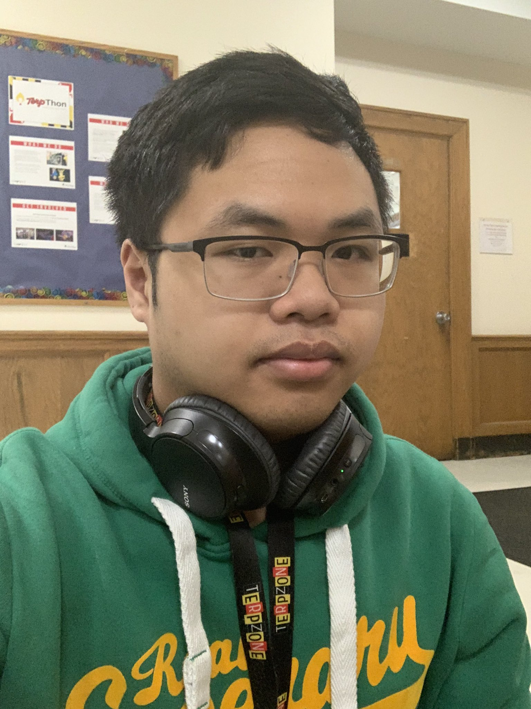

Mitchell Hang
Amateur Archivist

Mitchell is an amateur archivist who enjoys working with old media formats. He specializes in converting VHS videotapes to digital formats, in addition to other interests related to broadcasting.
Disc Jockey
WMUC Radio
Spring 2020 - Present
- Hosted a radio show dedicated to playing "the delightful sounds of 70's/80's bubble-era Japan"
- Logged playlists for each show that was broadcast while also managing equipment in the studio
- Volunteered for several events as a disc jockey
Anchorman
JAG-TV
2018 - 2019
- Appeared on camera for the high school's morning announcements show
- Regularly attended meetings to work out production schedules
- Did occasional behind-the-scenes work, including working the soundboard and editing intros
Tutor
George B. Thomas. Sr. Learning Academy, Inc.
2018 - 2019
- Helped younger kids (i.e., elementary school) with assignments
- Regularly logged tutoring hours to earn credit for graduation
- High School Diploma, Northwest High School at Germantown, 2019
- Currently an undergraduate, Journalism University of Maryland at College Park, expected graduation 2023/2024
- Video Editing (Adobe Premiere Pro, VEGAS Pro)
- Photo Editing (Adobe Photoshop)
- Working Collaboratively
- Upconverting of Older Audiovisual Formats
- Playing the Piano
- Kindness/Generosity